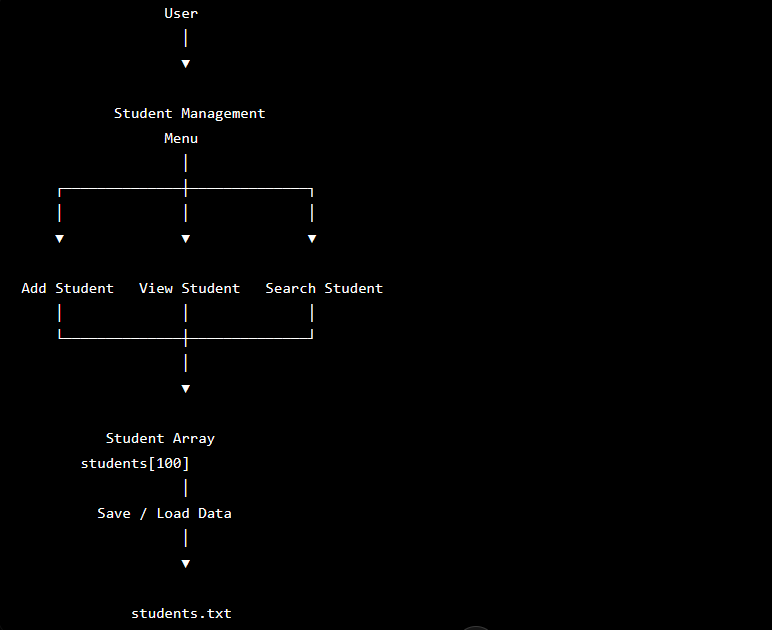
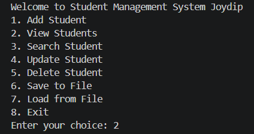
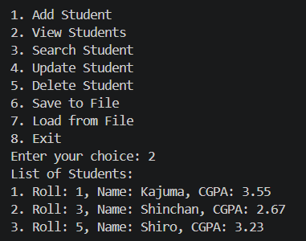
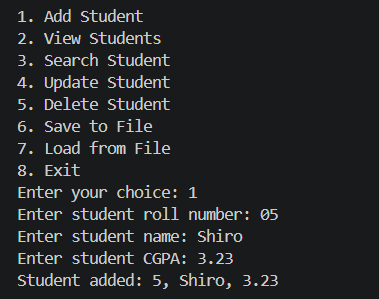

The Idea
I built this project to practice core C programming concepts by creating a complete application rather than solving isolated programming exercises.
After learning core C concepts such as structures, pointers, recursion, and file I/O, I wanted to move beyond small exercises and build a complete software project. The goal was not only to manage student records but also to learn project organization, modular design, compilation, linking, and persistent storage.
Design & Architecture
The application follows a simple menu-driven architecture. Student records are stored using structures and managed through separate functions responsible for each operation.
- Controller Layer — main.c
- Interface Layer — student.h
- Implementation Layer — student.c
- Persistence Layer — students.txt
Key Design Decisions
- Used structures to organize student information.
- Separated functionality into multiple source files.
- Implemented file-based storage to preserve records between sessions.

Build Photos



Code & Technical Details
Student records are represented using a structure and stored in an array during runtime. File operations are used to persist data between sessions.
typedef struct {
int roll;
char name[50];
char department[50];
} Student;
Build Log
Failures & Fixes
Final Performance
- Multi-file Project Architecture: Implemented
- Student Record Search: Implemented
- Modular Code Organization: Implemented
- Update or Delete Records: Implemented
- Persistent File Storage: Implemented
What I Learned
This project marked my transition from writing small standalone C programs to building a structured software project. While I was already familiar with concepts such as structures, pointers, recursion, and file I/O, this was my first experience organizing code across multiple source files and managing a complete application.
The most valuable lesson was understanding how real C programs are built and compiled. Working with header files, source files, compilation, linking, and persistent file storage helped me move beyond solving isolated programming problems and toward software engineering practices.
What I'd Do Differently
- Replace the fixed-size student array with dynamic memory allocation using malloc() and realloc().
- Add stronger input validation, including duplicate roll number detection and CGPA validation.
- Implement sorting and more efficient search techniques for larger datasets.
- Explore binary file storage or database integration instead of plain text files.
- Develop a graphical user interface to improve usability.